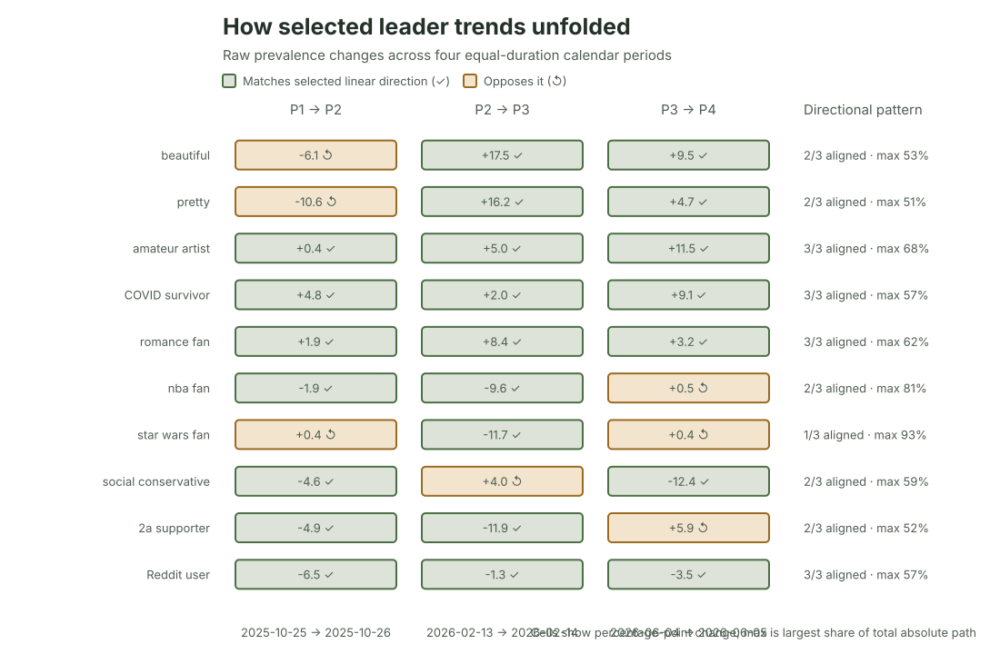

Ipseity Daily Pulse · 2026-09-24
A linear trend can hide a lurch
A linear summary can conceal an uneven four-period trajectory.
By Ceetown · 3 minute read
A straight-line trend summarizes a period. It does not mean change happened steadily throughout it.
We divided the Ipseity Daily observation window into four equal-duration periods for the 20 signifiers with the most extreme linear trends. Every first-to-last comparison pointed in the trend's direction, but only six moved that way in all three adjacent transitions. For the median signifier, the largest transition contained 58% of its total absolute movement.
star wars fan is the sharpest example among the selected
leaders. Its raw endorsement prevalence was 43.2%, 43.6%, 32.0%, and
32.4% across the four periods. The middle drop accounted for 93% of its
total absolute adjacent movement. That is a clue about shape—not
evidence of population change.
Source: Ipseity Daily download page

Evidence note
The values use canonical microdata through 2026-09-23, retrieved at 2026-09-24T10:06:35Z. The periods are 2025-07-08–2025-10-25, 2025-10-26–2026-02-13, 2026-02-14–2026-06-04, and 2026-06-05–2026-09-23. The concentration share divides the largest absolute adjacent change by the sum of all three absolute adjacent changes.
The diagnostic is raw, unweighted, and selected from the ten most
positive and ten most negative of 704 eligible linear trends. It does
not adjust for changing composition, calendar effects, or repeated
respondents. No primary trend passed the 5% Benjamini–Hochberg or
Bonferroni screen. Full estimates and limitations are recorded in CURRENT-FINDINGS.md and outputs/leader-period-trajectory.csv.
Snapshot note: This dated entry and figure are preserved from the stated check. Links to the cumulative report and aggregate tables may show newer data.